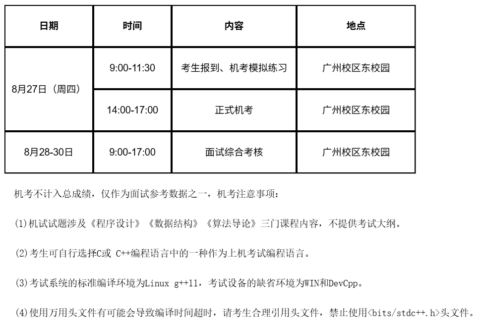

FIELD NOTE / 2026
中山大学计算机学院
预推免
机试 3 小时、10 道题；面试含英语朗读翻译和科研问答。
10 道机试题 / 3 小时个人机试 650 / 1000机试成绩仅供面试参考
01 / 整体流程与规模
- 预推免分为机试和面试两个部分。8 月 27 日上午先报到并进行机考模拟练习，主要是熟悉考试系统和操作环境；当天下午进行正式机试，8 月 28—30 日进行面试综合考核。
- 机试成绩不计入最终总成绩，只作为面试参考数据之一。我理解面试官可能会看到机试情况，但它对最终结果的直接影响相对有限。
- 当时参加预推免的人数大约有 500 多人，最终会给出排名。

02 / 机试内容与得分
- 正式机试共 3 小时、10 道题，每题 100 分，满分 1000 分。我当时得了 650 分。前两题偏 C/C++ 的语法、多态、类继承等内容，后八题主要是算法题；按我的体感，大约是 2 道 Easy、4 道 Medium、2 道 Hard。
- 题目范围主要对应《程序设计》《数据结构》《算法导论》。官方允许 C 或 C++，考试环境为 Linux + g++11。
- 每题按测试点给分，通过多少测试点就拿到相应分数。测试点失败后会返回一定的信息，可以据此继续调试；即使完整思路没有做出来，也可以通过保证程序能编译、覆盖简单情况和部分边界情况尽量拿到部分分数。
03 / 面试形式与体验
- 面试开始先进行大约 5 分钟的 PPT 自我介绍。之后会抽一道英语题，给一段英文材料，先朗读再翻译。我当时朗读到一半就被老师打断开始翻译，翻译到一半又被打断，随后直接进入专业问答。
- 我当时没有被问到专业课知识，后面的专业问答基本都围绕科研项目展开。整体压力属于中等，不算特别轻松，但也没有明显的压力面。
04 / 线下面试问题
下面只整理我之前记录的中山大学计算机学院预推免正式面试问题，不包含导师私面：
- 现有的 SAM 系列模型已经有很好的分割效果，它可以直接用于你研究的任务吗？如果不能直接使用，应该如何改造或接入？
- 你提到已有工作使用 SAM 系列模型完成相关任务，你的方法相比这类范式有什么优势？
- 第一篇论文中“细粒度”具体指什么，这一设计在方法中是如何实现的？“细粒度”只是语言侧的优化吗，图像侧有没有对应的细粒度设计？
05 / 结果、排名与 Bar
- 我最终拿到了比较靠前的排名。听到的情况是，上一年中山大学计算机学院出现了比较明显的候补顺延，最后接近 500 名仍有机会；因此如果已经进入预推免并拿到排名，后续获得实际名额的概率相对较大。不过每年的放弃人数都会变化，这一点只能作为往年经验参考。
- 计算机学院本身的入营 Bar 不低。以我们学院当时的情况来看，去年进入中山大学计算机学院预推免的只有我一人；其他院系也有同学进入，但我没有详细了解，因此这里只能作为个人观察。
06 / 导师联系与后续选择
- 中山大学计算机学院并不是必须先联系导师才能通过预推免。可以在预推免前联系，也可以拿到排名以后再联系；但如果目标是热门导师，越早联系越好，因为优质导师的名额往往会比较早确定。
- 我是在预推免前联系老师，预推免通过后加了老师微信；线下参加预推免时也和老师当面交流，之后顺利拿到了导师这边的 offer。
- 我联系的老师来自 HCP 实验室。按我当时的了解，这是中山大学计算机学院里实力很强的团队之一，老师本身的研究方向和学术实力也很符合我的预期。因此在拿到中山大学的结果后，我把它作为保底，后续没有再继续参加部分“中九”学校的预推免。